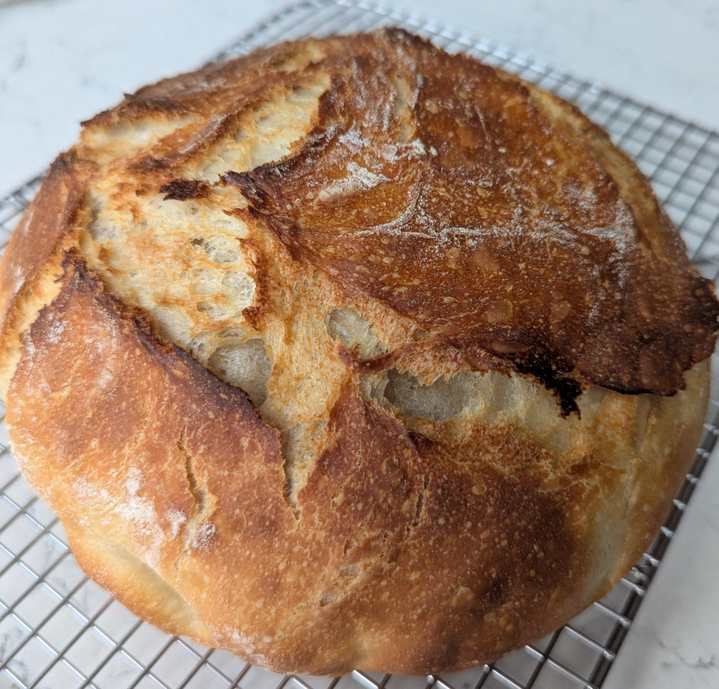

Sourdough White Bread★
 Vegetarian/Vegan
Vegetarian/Vegan
Crusty, quick and easy

150gactive sourdough starter270gwarm water25golive oil500gstrong bread flour10gfine sea salt
In a large bowl, add the sourdough starter, water and olive oil. Mix with to combine.
Add the flour and salt. Continue mixing until the dough becomes stiff.
Then squish everything together with your hands to incorporate all of the flour. The dough will be dry and shaggy.
Cover the bowl with reusable wrap. Let rest (autolyse) for 30 minutes to 1 hour.
After the dough has rested work the dough into a rough ball, about 15 seconds.
Cover the bowl tightly. Let rest in a warm spot to bulk rise, ideally 20C. The dough is ready when it no longer looks dense and has almost doubled in size.
Optional Step: During bulk rise, you have the option to perform a series of ‘stretch & folds’ to strengthen the dough. Start 30-45 minutes into the bulk rise. Gather a portion of the dough, stretch it upwards and then fold it over itself. Rotate the bowl ¼ turn and repeat this process until you have come full circle to complete 1 set. Do this once or twice spaced about 1 hour apart.
Preheat the oven to 220C
Remove the dough from the bowl onto a lightly floured surface.
To Shape
Starting at the top, fold the dough over toward the center. Give it a slight turn, and then fold over the next section of dough. Repeat until you have come full circle. It will gently deflate as you fold and shape it. Then flip the dough over and place it seam side down. Using your hands, gently cup the sides of the dough and rotate it, using quarter turns in a circular motion. You can also pull it towards you to even out the shape. Repeat this process until you are happy with its appearance. Place in a parchment paper-lined bowl (not wax paper) and cover with a towel. Let stand on counter top for about 35 minutes.
Right before your bread goes into the oven, make a shallow slash about 2-3 inches long (or more) in the center of the dough. Use a bread lame, razor blade, sharp paring or a small serrated steak knife. The cut should be about 1/4-inch deep.
To Bake
Place the bread into the oven on the center rack (lid on) and reduce the temperature to 400° F/ 204° C. Bake for 20 minutes. Remove the lid, and continue to bake (uncovered) for an additional 40 minutes or until deep, golden brown. Keep in mind that all ovens are different; you might have to make minimal adjustments to these temperatures.
You can also take the internal temperature of your bread to double check that it is done. For sourdough, it should read about 205-210º F/ 96-98º C.
Remove the bread from the oven, and cool on a wire rack for at least an hour before slicing. Don’t cut too soon or else the inside will have a damp and gummy texture.